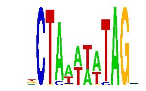

family_5 |
|---|
|  |
| Download PWM |
| Download instances (motifs) |
| Show motif distribution |
Query_ID | Query_Consensus | Subject_Name | Source_DB | Subject_ID | Length | Orientation | Offset | Divergence | Overlap | Subject_Consensus |
|---|---|---|---|---|---|---|---|---|---|---|
| family_5 | NCTAAATATAGN | MEF2A | JASPAR | MA0052.1 | 10 | as given | 1 | 0.709 | 10 | CTATTTATAG |
| family_5 | NCTAAATATAGN | MEF2A | JASPAR | MA0052.1 | 10 | reverse-complement | 1 | 0.784 | 10 | CTATTTATAG |
Sequence | Start_position (from start) | Start_position (from end) | Average conservation | Best conservation score | Instance_with_best_CS | Best_Z-score | Instance_with_best_ZS | Strand |
|---|---|---|---|---|---|---|---|---|
| chr9:24767135-24768900 | 861 | 873 | 0.86175 | 0.882 | .CTAAAAWTAGM | 18.642365 | .CTAAAWATAGM | 1 |
| chr2:163216200-163219500 | 2081 | 2093 | 0.0125 | 0.046 | .CKAAAWATAG. | 12.745775 | .CTAMAAATAGY | -1 |
| chr8:64311000-64313700 | 2665 | 2677 | 0.468667 | 0.532 | .CTAWTTWTAG. | 12.037083 | .CTAAAWATAG. | -1 |
| chr18:11069468-11071294 | 11 | 23 | 0.130583 | 0.484 | .CKAAAWATAG. | 12.745775 | .CTAMAAATAGY | 1 |
| chr19:36338177-36339900 | 890 | 902 | 0.995917 | 1 | .CTAWTTWTAG. | 12.745775 | .CTAWTTKTAGC | 1 |
| chr14:22257007-22258007 | 618 | 630 | 0.00858333 | 0.018 | .CTAWAAATAGM | 12.722097 | TCTAWTTWTAG. | 1 |
| chr10:96104700-96105759 | 223 | 235 | 0.182667 | 0.333 | TCTARTTTYAG. | 12.745775 | TCTARTTTYAG. | 1 |
| chr1:43201300-43203046 | 787 | 799 | 0.108417 | 0.14 | GCTMMAAATAG. | 12.39677 | .CTMAAWATAG. | -1 |
| chr13:46706083-46707200 | 727 | 739 | 0.000333333 | 0.001 | .CTAWTTWTAG. | 15.956948 | .CTAWAAATAGM | 1 |
| chr13:12128224-12131300 | 247 | 259 | 0.997167 | 1 | TCTARTTTYAG. | 12.745775 | TCTARTTTYAG. | -1 |
| chr17:10030172-10031900 | 223 | 235 | 0.9735 | 0.998 | TCTARTTTYAG. | 12.199781 | .CTAWTTWTAG. | -1 |
| chr13:9453470-9454470 | 147 | 159 | 0.0148333 | 0.035 | .CTAWTTWTAG. | 12.745775 | TCTARTTTYAG. | 1 |
| chr4:133873200-133876300 | 1897 | 1909 | 0.583083 | 1 | TCTAWTTWTAG. | 18.642365 | .CTAAAAWTAGM | 1 |
| chr1:75343200-75345100 | 733 | 745 | 0.932083 | 0.996 | .CTAWAAATAGM | 12.199781 | .CTAWTTWTAG. | 1 |
| chr13:29281700-29283800 | 888 | 900 | 0.182333 | 0.295 | .CTAMAAATAGY | 12.745775 | .CTAMAAATAGY | 1 |
| chr10:52701875-52702900 | 267 | 279 | 0.234 | 0.644 | .CTAAWTATAG. | 12.745697 | .CKAAWTATAG. | -1 |
| chr11:21460935-21462500 | 784 | 796 | 0.002 | 0.005 | .CTAAWTATAG. | 12.037083 | .CTAAAWATAG. | 1 |
| chr4:147335900-147338900 | 1994 | 2006 | 0.999833 | 1 | TCTARTTTYAG. | 12.199781 | .CTAWTTWTAG. | -1 |
| chr8:46717900-46719800 | 989 | 1001 | 0.000833333 | 0.003 | TCTAWTTWTAG. | 12.199781 | .CTAWTTWTAG. | -1 |
| chr14:102196074-102197800 | 161 | 173 | 0.344 | 0.358 | GCTMMAAATAG. | 12.199781 | .CTAWTTWTAG. | -1 |
| chr9:25012100-25013422 | 606 | 618 | 0.01275 | 0.08 | .CKAAWTATAG. | 12.745697 | .CTAAWTATAG. | -1 |
| chr13:46583140-46584140 | 765 | 777 | 0.0629167 | 0.256 | .CTAAAWATAGM | 18.642365 | .CTAAAAWTAGM | 1 |
| chr2:17545474-17547000 | 291 | 303 | 0.880917 | 1 | .CTAWTTWTAG. | 12.39677 | .CTMAAWATAG. | 1 |
| chr17:71363500-71365000 | 1059 | 1071 | 0.694167 | 0.922 | .CTAAAAWTAGM | 12.745775 | .CTAWTTKTAGC | 1 |
| chr13:89873922-89874922 | 916 | 928 | 0.83725 | 0.994 | .CTAAAWATAG. | 12.745697 | .CTAAWTATAG. | -1 |
| chr4:129549200-129551000 | 742 | 754 | NA | NA | .CTMAAWATAG. | 14.438022 | GCTMMAAATAG. | -1 |
| chr2:90956900-90959121 | 1310 | 1322 | 0.9595 | 1 | .CTMAAWATAG. | 12.037083 | .CKAAAWATAG. | -1 |
| chr13:12220700-12221858 | 60 | 72 | 0.004 | 0.015 | TCTARTTTYAG. | 12.745775 | TCTARTTTYAG. | -1 |
| chr13:11524998-11525998 | 74 | 86 | 0.0449167 | 0.059 | TCTARTTTYAG. | 12.745775 | TCTARTTTYAG. | 1 |
| chr14:21486600-21488800 | 961 | 973 | 0.936417 | 0.998 | .CTMAAWATAG. | 14.438022 | GCTMMAAATAG. | 1 |
| chr2:77019700-77021600 | 900 | 912 | 0.00983333 | 0.022 | .CTAWTTWTAG. | 12.745775 | .CTAWTTKTAGC | 1 |
| chr3:122730300-122731421 | 434 | 446 | 0.00025 | 0.001 | .CKAAWTATAG. | 12.39677 | .CTMAAWATAG. | 1 |
| chr14:21486600-21488800 | 422 | 434 | 0.01875 | 0.081 | TCTARTTTYAG. | 12.745775 | TCTARTTTYAG. | -1 |
| chr5:148661430-148663100 | 667 | 679 | 0.998833 | 1 | .CKAAWTATAG. | 12.037083 | .CTAAAWATAG. | 1 |
| chr4:57767100-57768553 | 1298 | 1310 | 0.00666667 | 0.026 | .CTAWTTWTAG. | 12.199781 | .CTAWTTWTAG. | -1 |
| chr8:64252000-64253540 | 754 | 766 | 0.00541667 | 0.018 | .CKAAAWATAG. | 12.037083 | .CTAAAWATAG. | -1 |
| chr8:46727800-46730539 | 638 | 650 | 0.000666667 | 0.002 | .CTAWTTWTAG. | 12.722097 | TCTAWTTWTAG. | -1 |
| chr10:52894700-52896300 | 1445 | 1457 | 0.874583 | 1 | .CTAAAAWTAGM | 12.722097 | TCTAWTTWTAG. | 1 |
| chr6:34645500-34647200 | 397 | 409 | 0.00166667 | 0.005 | .CTAMAAATAGY | 12.745775 | GCTAMAWATAG. | 1 |
| chr3:101573772-101575200 | 784 | 796 | 0.0214167 | 0.041 | TCTARTTTYAG. | 12.199781 | .CTAWTTWTAG. | 1 |
| chr2:166027700-166030700 | 3007 | 3019 | 0.0796667 | 0.14 | .CTMAAWATAG. | 12.037083 | .CTAAAWATMG. | -1 |
| chr2:76871292-76872400 | 741 | 753 | 0.00141667 | 0.008 | .CKAAWTATAG. | 12.745697 | .CKAAWTATAG. | -1 |
| chr1:191908200-191910800 | 1506 | 1518 | 0.995 | 0.999 | TCTAWTTWTAG. | 12.199781 | .CTAWTTWTAG. | 1 |
| chr14:21486600-21488800 | 1015 | 1027 | 0.986583 | 1 | .CKAAWTATAG. | 12.745697 | .CTAAWTATAG. | 1 |
| chr14:21937362-21939574 | 193 | 205 | NA | NA | .CKAAWTATAG. | 12.037083 | .CTAAAWATAG. | 1 |
| chr14:55583700-55589300 | 3187 | 3199 | 0.00591667 | 0.014 | .CTMAAWATAG. | 12.39677 | .CTMAAWATAG. | 1 |
| chr12:104600200-104602100 | 611 | 623 | 0.0549167 | 0.1 | .CTMAAWATAG. | 12.745697 | .CTAAWTATAG. | -1 |
| chr5:123007200-123008923 | 995 | 1007 | 0.00283333 | 0.007 | .CTAWAAATAGM | 12.722097 | TCTAWTTWTAG. | 1 |
| chr8:13215985-13217500 | 278 | 290 | NA | NA | .CKAAWTATAG. | 18.642365 | .CTAAAWATAGM | -1 |
| chr18:11692600-11694168 | 1469 | 1481 | 0.016 | 0.033 | .CKAAWTATAG. | 12.722097 | TCTAWTTWTAG. | 1 |
| chr1:191783500-191786100 | 1039 | 1051 | 0.875667 | 0.995 | .CTAWTTWTAG. | 12.722097 | TCTAWTTWTAG. | -1 |
| chr10:116478300-116480100 | 1053 | 1065 | 0.00075 | 0.004 | .CTMAAWATAG. | 12.745697 | .CTAAWTATAG. | 1 |
| chr15:89245000-89247100 | 949 | 961 | 0.0375 | 0.047 | .CTAAAWATMG. | 12.037083 | .CTAAAWATAG. | 1 |
| chr1:43215700-43218157 | 1053 | 1065 | 0.0025 | 0.013 | .CTMAAWATAG. | 12.199781 | .CTAWTTWTAG. | 1 |
| chr9:77192100-77194257 | 1155 | 1167 | 0.00241667 | 0.016 | .CTAMAAATAGY | 12.745775 | .CTAMAAATAGY | -1 |
| chr3:159579591-159580591 | 460 | 472 | 0.00233333 | 0.005 | .CTMAAWATAG. | 12.39677 | .CTMAAWATAG. | -1 |
| chr6:34645500-34647200 | 883 | 895 | 0.91375 | 1 | .CTAWAAATAGM | 12.199781 | .CTAWTTWTAG. | -1 |
| chr10:90904800-90906285 | 1380 | 1392 | 0.1005 | 0.4 | TCTARTTTYAG. | 12.745775 | TCTARTTTYAG. | -1 |
| chr10:7007500-7009900 | 1314 | 1326 | 0.0166667 | 0.026 | GCTMMAAATAG. | 12.745775 | .CTAMAAATAGY | -1 |
| chr1:43184625-43186700 | 1925 | 1937 | 0.000333333 | 0.001 | .CTAAAAWTAGM | 18.642365 | .CTAAAWATAGM | -1 |
| chr13:12220700-12221858 | 874 | 886 | 0.645667 | 0.989 | GCTMMAAATAG. | 12.745775 | GCTAMAWATAG. | -1 |
| chr7:16934900-16936200 | 543 | 555 | 0.910917 | 1 | .CKAAAWATAG. | 12.745775 | .CTAMAAATAGY | -1 |
| chr17:80563200-80565455 | 678 | 690 | 0.00908333 | 0.017 | GCTMMAAATAG. | 14.438022 | GCTMMAAATAG. | 1 |
| chr2:35038114-35039114 | 847 | 859 | 0.612083 | 0.92 | .CTAWTTWTAG. | 12.199781 | .CTAWTTWTAG. | -1 |
| chr13:46508700-46510200 | 407 | 419 | 0.120167 | 0.862 | .CTMAAWATAG. | 12.199781 | .CTAWTTWTAG. | 1 |
| chr12:75042793-75043793 | 783 | 795 | 0.0576667 | 0.144 | .CTAAAWATMG. | 12.037083 | .CTAAAWATAG. | 1 |
| chr1:72981600-72984300 | 2191 | 2203 | 0.0146667 | 0.036 | .CTAAWTATAG. | 12.39677 | .CTMAAWATAG. | 1 |
| chr3:95764000-95766500 | 1430 | 1442 | 0.172333 | 0.204 | .CTMAAWATAG. | 12.39677 | .CTMAAWATAG. | -1 |
| chr11:30163300-30164899 | 1527 | 1539 | 0.991 | 1 | .CTMAAWATAG. | 12.39677 | .CTMAAWATAG. | 1 |
| chr6:24491305-24493948 | 2293 | 2305 | 0.0365 | 0.114 | TCTAWTTWTAG. | 12.199781 | .CTAWTTWTAG. | 1 |